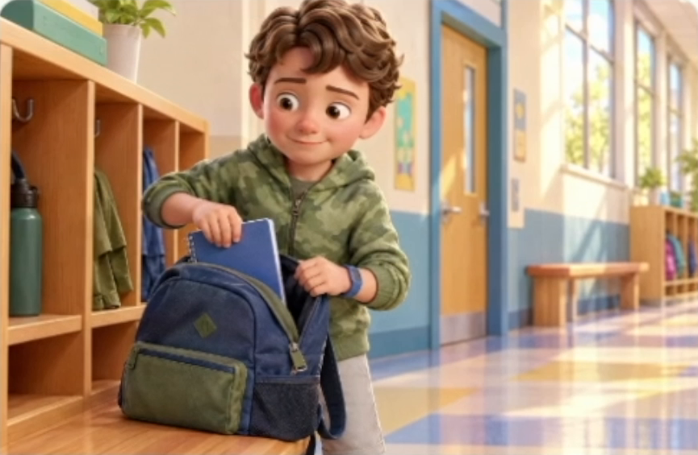
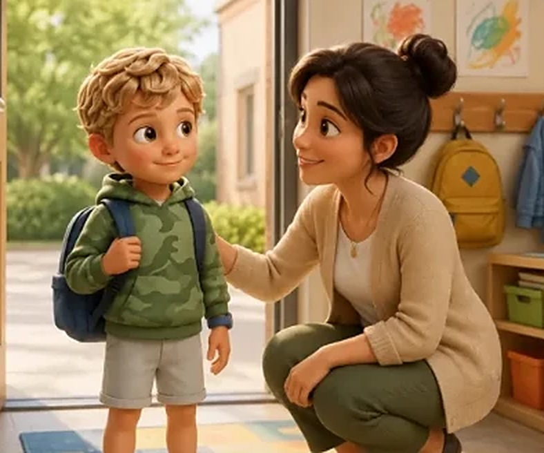
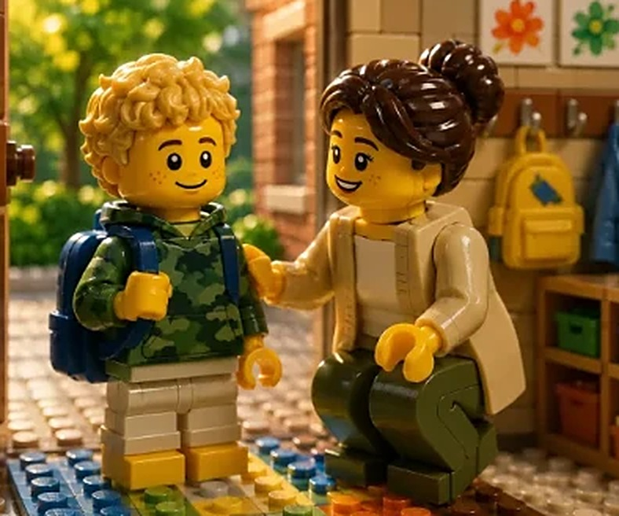
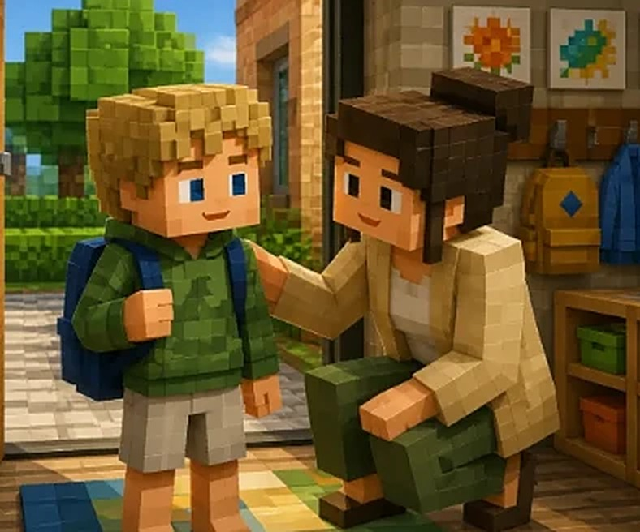
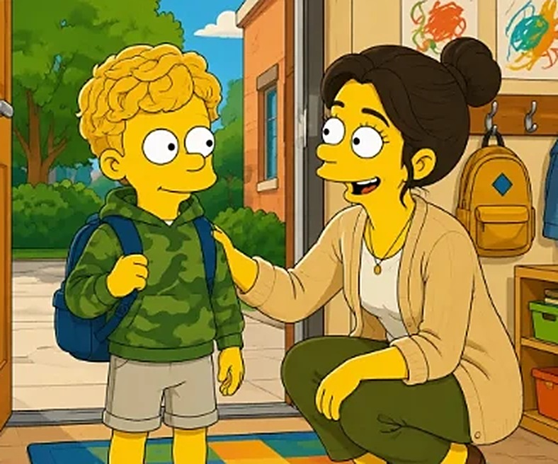
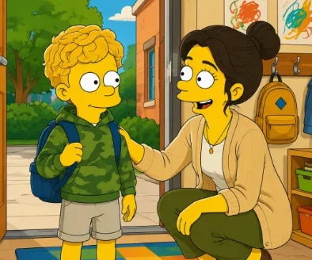

My son is autistic.
Leaving the park can mean a meltdown.
I gave warnings. I counted down.
But a warning only tells him when.
5
more minutes
It doesn’t show him what happens next:
That’s why we use

START HERE
When It’s Time to Switch
This story helps David practice stopping a favorite activity and moving to what comes next.
It makes social stories:
short stories that walk your child through
a moment before it happens.
On a university list of evidence-based practices for autistic kids.
Now, to start us off, before we go through a few everyday areas, what are one or two situations that are hardest for David right now?
Your answer
He struggles with leaving the park, leaving school, and saying goodbye
Send answer
Story guide
Thanks for sharing that—sounds like goodbyes are really tough. Can you tell me more about what usually happens when it’s time to leave the park?I just tell it the hard part, the way I’d tell a friend,
and it writes a story about his moment.
A STARRING ROLE, MADE PERSONAL
Their face.
A little storybook magic.

You put them right into the story,
with the people they know beside them.



LEGO-inspired
Minecraft-inspired
Pixar-inspired

Simpsons-inspired
Pick their favorite art style,

STORY 02
Leaving the Park

STORY 03
Leaving a Favorite Place

STORY 04
Saying Goodbye
STORY 07
Getting Ready in the Morning
and practice tricky moments before they even happen.
When It’s Time
to Switch
to Switch
I read it first.
Then we read it together,
and again at his pace.
It doesn’t replace his therapist.
But it finally gives us
a way to prepare together.
Meet storybook David.
This is how David will appear in their personalized stories.
THEIR STARTING LIBRARY IS READY
0 of 10 story previews ready
$0.00today
Start my 7-day free trial
Make a free account,
see story ideas and his character before you pay anything.
Try it free for seven days.